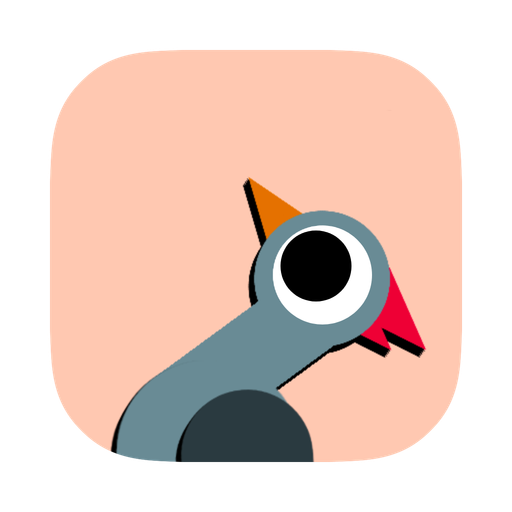

Luna
Playground nativo de JavaScript e TypeScript para macOS.
Baixar o Luna 0.1.0macOS 15 ou mais novo · Mac com Apple Silicon · 6,1 MB
Instalar pelo Homebrew
brew install --cask uaibritto/luna-playground/luna
Instalar pelo DMG
- Abra o DMG e arraste o Luna para a pasta Aplicativos.
- Na primeira abertura, o Luna baixa o Bun, que executa os seus snippets. Isso leva alguns segundos.
Primeira abertura
O Luna ainda não é assinado com um certificado Developer ID da Apple, então o macOS bloqueia a primeira abertura. Para liberar:
- Tente abrir o Luna uma vez e feche o aviso.
- Abra Ajustes do Sistema → Privacidade e Segurança.
- Clique em “Abrir mesmo assim” ao lado do aviso do Luna e confirme.
Ou, pelo Terminal:
xattr -dr com.apple.quarantine /Applications/Luna.app
Depois disso, o Luna abre normalmente e se atualiza sozinho.
Conferir o download
O SHA-256 do DMG está em Luna-0.1.0.dmg.sha256:
shasum -a 256 ~/Downloads/Luna-0.1.0.dmg